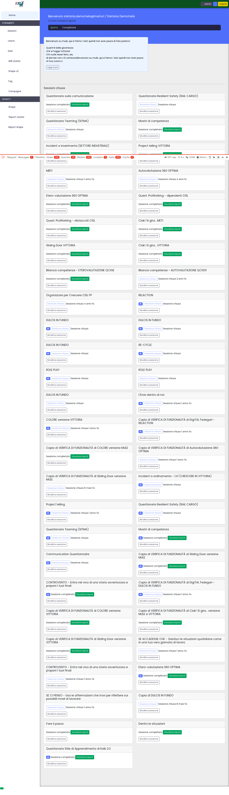
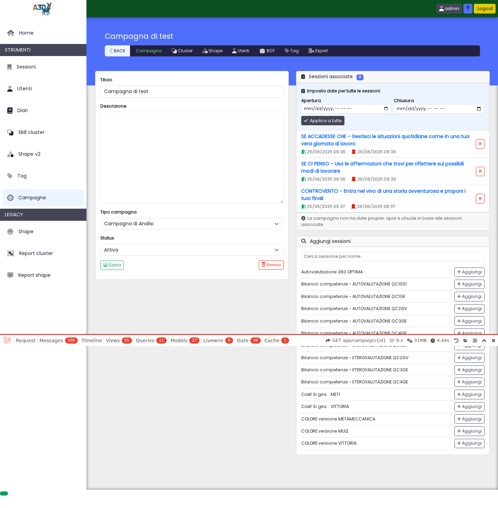
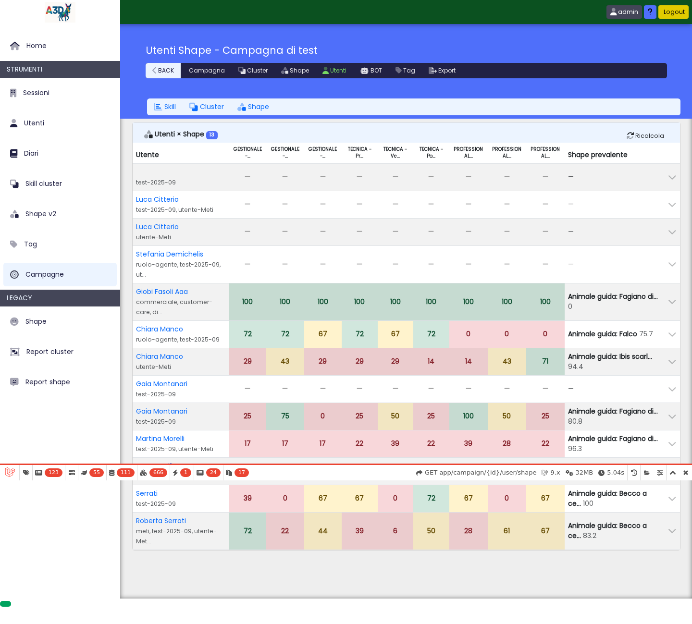
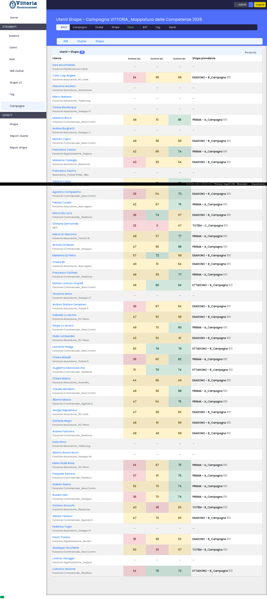

Collaudo del lavoro su mule, e confronto con vittoria che aspetta ancora l'ultimo pezzo.
La pagina che non mostrava più le persone adesso le mostra, su tutte e due le piattaforme. Su mule è anche veloce, perché ha ricevuto l'ultimo pezzo del lavoro. Su vittoria ci mette ancora quasi cinquanta secondi: funziona, ma è a un soffio dal limite oltre il quale il sito rinuncia e mostra errore. Quel pezzo va messo anche lì.
La segnalazione diceva «non si vedono gli utenti», e sembrava che mancassero dei dati. Non mancava niente: le persone nel sistema c'erano tutte. La pagina non riusciva a finire di prepararsi.
Il sito ha una regola di sicurezza: se una pagina ci mette più di un minuto a essere pronta, viene interrotta, perché un'attesa infinita blocca anche tutti gli altri. Questa pagina ci metteva circa cinque minuti. Veniva interrotta ogni volta, e chi guardava vedeva una pagina che non arrivava mai.
Tutto il lavoro è stato provato prima su mule, che è la copia usata per le prove, e solo dopo si tocca quella vera. Siamo entrati con un utente amministratore.

La pagina iniziale di mule, con l'accesso effettuato.
Apri muleDa qui si arriva alla sezione delle persone. È lo stesso percorso che fa chi usa la piattaforma tutti i giorni.

La campagna su cui abbiamo fatto le misure.
Apri la campagnaQuesta è la pagina che non si apriva. Su mule, con tutte e tre le correzioni, mostra le sue 13 persone con i punteggi colorati e la forma prevalente. Nessun errore nel browser.

mule, pagina completa: 13 persone, punteggi per area, forma prevalente a destra.
Apri la pagina su muleStesso programma, stessa pagina, piattaforma vera. Mostra tutte le 49 persone: il problema segnalato è chiuso. Ma ci mette 49 secondi, contro un limite di 60 oltre il quale verrebbe di nuovo interrotta.
Il motivo è l'ultimo pezzo, quello che su mule c'era già e su vittoria no: una specie di indice analitico del database. Senza, per trovare una riga il sistema le legge tutte, sessantatremila ogni volta. Con l'indice va dritto al punto. È la stessa differenza fra cercare una parola in un dizionario e leggere il dizionario dall'inizio.

vittoria, pagina completa: tutte le 49 persone ci sono. Caricata in 49 secondi.
Per misurarlo abbiamo fatto una cosa un po' particolare: su mule gli indici c'erano già, quindi glieli abbiamo tolti per ricreare la condizione di vittoria, misurato, e poi rimessi con la procedura automatica. Stessa pagina, stessi dati, stesso programma.
| mule | Tempo di calcolo | Richieste al database |
|---|---|---|
| Con gli indici | 1,31 s | 275 |
| Senza (come vittoria oggi) | 8,34 s | 275 |
| Dopo la procedura automatica | 1,34 s | 275 |
Le richieste al database sono sempre 275. Gli indici non riducono le domande che il programma fa: rendono veloce ogni risposta. Per questo servivano in aggiunta alle due correzioni precedenti, non al posto loro.
Domani su vittoria: una sola procedura automatica, pochi secondi, nessuna modifica ai dati. Poi la stessa cosa sulle altre undici piattaforme, che hanno lo stesso problema anche se finora nessuno se n'è lamentato.
Da oggi quel pezzo è scritto nel programma invece di esistere su una macchina sola: le piattaforme nuove nasceranno già a posto, e un controllo automatico segnala subito quelle a cui manca.
| Server | a3d-s0 (Hetzner, Forge) — 5.75.135.34 |
| Path | /home/forge/{tenant}.a3d.it |
| Tenant collaudato | mule.a3d.it (DB a3dmule) |
| Tenant di confronto | vittoria.a3d.it (DB a3dvittoria) |
| Scenario | post-fix validation |
| Commit | c03742ce → d38987b3 → 5989e3bb |
| Verdict | FIXED su mule, PENDING su vittoria (indici) |
/var/log/nginx/vittoria.a3d.it-error.log 2026/09/28 13:34:09 [error] upstream timed out (110: Connection timed out) while reading response header from upstream, client: 5.99.6.233, request: "GET /app/campaign/1/user/shape HTTP/2.0" (altre due: 13:55:22, 14:47:31) /var/log/php8.3-fpm.log [28-Sep-2026 13:31:24] WARNING: [pool www] child 1961245, script '/home/forge/vittoria.a3d.it/public/index.php' execution timed out (73.751236 sec), terminating /etc/php/8.3/fpm/pool.d/www.conf request_terminate_timeout = 60
Issue aperta alle 13:57, primo timeout alle 13:34.
1. N+1 in SubscriptionCalculator — Block::getScoreForInput()
leggeva $input->subscription in lazy e BlockCalculator::getAnswerForBlock()
rileggeva l'intera collection di input su quell'istanza; più i figli e i metas del blocco uno
per uno. Una subscription da 113 input: 343 query, 36s → 8 query, 0,29s.
2. N+1 in Cluster::getShapedScoreValue() — una query sul pivot
cluster_shape per ogni coppia (cluster, shape) per ogni utente. 5664 query per
49 utenti → 1941.
3. Indici assenti — blocks (63.730 righe) e meta
avevano solo la primary key. select * from blocks where block_id in (...):
400-500ms a query, 88% del tempo di pagina in SQL.
CREATE INDEX idx_blocks_block_id ON blocks (block_id); CREATE INDEX idx_blocks_module_id ON blocks (module_id); CREATE INDEX idx_blocks_skill_id ON blocks (skill_id); CREATE INDEX idx_meta_entity_id ON meta (entity_id); CREATE INDEX idx_inputs_block_id ON inputs (block_id); CREATE INDEX idx_inputs_user_id ON inputs (user_id); CREATE INDEX idx_scores_subject_id ON scores (subject_id); CREATE INDEX idx_scores_context_id ON scores (context_id);
Esistevano su mule, aggiunti a mano, in nessuna migration. Ora in
App\Database\HotPathIndexes, letta sia dalla migration sia dal test.
La prima versione del down() chiamava HotPathIndexes::drop().
up() salta i due indici già presenti su ogni tenant
(idx_inputs_subscription, idx_scores_subj_ctx), ma
down() li cancellava comunque: un rollback lasciava il tenant peggio di
prima. Visto solo girando il ciclo completo migrate →
rollback → migrate su mule. Ora down() è un no-op
documentato.
| Misura | Valore |
|---|---|
| vittoria, prima di tutto | ~300s (timeout a 60) |
| vittoria, dopo fix 1 | 55,46s — 5664 query |
| vittoria, dopo fix 2 (stato attuale) | 35,44s calcolo — 1941 query |
| vittoria, pagina intera dal browser | 49,11s — HTTP 200, 49 righe |
| mule con indici, calcolo | 1,31s — 275 query |
| mule senza indici, calcolo | 8,34s — 275 query |
| mule, pagina intera dal browser | 8,61s — 5,04s lato server |
Le misure di calcolo sono mount() + render() del componente. La
pagina intera include layout e sidebar, che pesano a parte e non sono stati toccati.
SubscriptionCalculatorQueryCountTest — le query non devono crescere col
numero di input.
CampaignShapeCalculatorQueryCountTest — conta le query su
cluster_shape: 23 prima, max 4 dopo. Due formulazioni più deboli sono state
scartate perché passavano dove il bug c'era.
HotPathIndexesTest — 10 casi, uno per indice, con il nome e il comando da
lanciare nel messaggio di errore.
tests/Feature/Score + tests/Unit OK — 48 test, 154 assertion (1 incomplete preesistente) migrate → created: 8 indici, 2.751ms rollback → no-op, indici intatti migrate → nothing to do, 73ms
Equivalenza: output confrontato prima/dopo su tutte le 235 subscription con input di mule e su tutte le 20 coppie campagna:utente — zero differenze.
• Il deploy key GitHub dell'utente forge su s0 non esiste più. Deploy fatto
via Forgejo (tailnet), token a3d-s0-ro con scope read:repository.
• Shape::getTextForUser() dereferenzia l'utente autenticato senza
controllarlo: Call to a member function hasTag() on null. In pagina non si vede
perché un utente c'è sempre. Fuori dallo scope di #1858.
• La cache di getSkillTotals ha TTL 3600s su driver file: ogni
ora il primo visitatore paga il costo a freddo.
• La password del DB a3dvittoria è stata ruotata: era finita in chiaro nel
transcript di una sessione.
• Backup schema mule prima delle prove:
/home/forge/mule-schema-backup-20261001145446.sql.